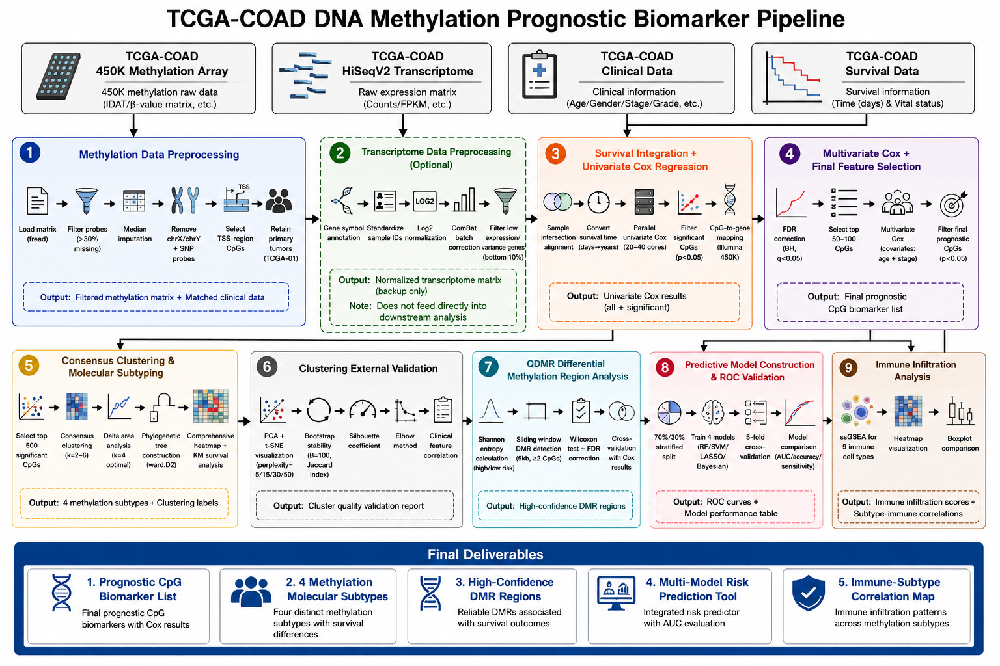

Selected work · 2024—Present
Research
Experimental and computational projects at the intersection of biomaterials, molecular biology, and data science.
Hydrogel-based wound repair
Undergraduate Researcher · Professor Qiuyue Ma's Lab, HIT
QuestionHow can functional hydrogels support tissue repair in diabetic wound models?
My contributionAnimal-model establishment, hydrogel application, healing monitoring, histology, and cytokine analysis.
StatusOngoing experimental research.
Key resultEstablished a reproducible full-process workflow from model creation to tissue analysis.

Translation-factor proximity labeling
Undergraduate Researcher · Professor Chen Zheng's Lab, HIT
QuestionCan a proximity-labeling assay capture proteins associated with translation factors?
My contributionDesigned ERF1–GFP–BirA and translation-factor–BirA systems; performed transfection, biotin treatment, cell lysis, streptavidin pull-down, and Western blotting in 293T cells and hepatocytes.
StatusCompleted laboratory rotation with iterative assay troubleshooting and control optimization.
Key resultEstablished construct-dependent biotin-labeling signals and used GFP-only, no-biotin, input, and pull-down controls to distinguish labeling from expression variation and endogenous background.

Colorectal cancer prognosis analysis
Independent Project Lead
QuestionCan multi-omics biomarkers improve colorectal-cancer prognosis stratification?
My contributionDesigned and implemented the complete TCGA-COAD analysis and visualization workflow.
StatusCompleted independent project.
Key resultLASSO-Cox risk model achieved AUC > 0.75 for five-year survival prediction.

NeurIPS Open Polymer Prediction
Team Lead & Main Programmer · Kaggle Silver Medal
QuestionHow accurately can molecular representations predict polymer physical properties?
My contributionFeature engineering, LSTM and ensemble modeling, cross-validation, and hyperparameter optimization.
StatusCompetition completed.
Key resultRank 28 / 2,240 teams · Top 1.25% · Silver Medal.

CIMA natural-cohort immune atlas
Graduation Project · Exploratory single-cell analysis
QuestionHow can large-scale immune multi-omics data resolve canonical and rare NK/ILC cell states?
My contributionBuilt an embedding and visualization workflow for a CIMA NK atlas containing 503,083 cells, including an L4-stratified UMAP analysis of 56,687 cells.
Data sourceChinese Immune Multi-Omics Atlas natural cohort: 428 adults and more than 10 million immune cells.
Analysis focusNK/ILC state structure, broad cell-state composition by sex, and cell-state centroid similarity.
SpaceTracer genotype-classification reproduction
Independent method reproduction · Partial workflow
QuestionCan an unfamiliar genotype-classification method be traced from real sequencing data into testable code?
My contributionPerformed FASTQ/BAM and tag quality control, generated candidate variants with mpileup, aggregated barcode/UMI evidence, and implemented genotype-likelihood scoring.
StatusPartial reproduction completed; end-to-end validation and biological interpretation remain future work.
Key resultReproduced an intermediate SpaceTracer classification step while documenting the data flow and source logic needed for further validation.